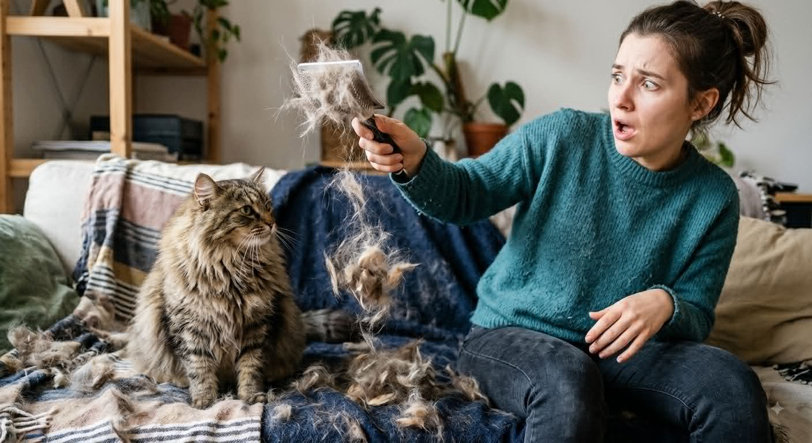

WHY DOES MY PET SHED?

Understanding the Hair Growth Cycle
Shedding is a normal part of your pet’s hair-growth cycle. Each hair goes through several phases:
• Anagen: an active growth period when hair grows to its genetically determined length
• Catagen: a transitional phase between growth and rest
• Telogen: a resting phase before the hair is shed
Pets with continuously growing hair, such as poodles and shihitzus, have a hair cycle dominated by the anagen phase, which can last for years. This is why their hair keeps growing and requires regular grooming. Other pets have a telogen-dominated cycle, where hair grows for a shorter period and sheds more frequently. Genetics play a major role in how much your pet sheds. Breeds like collies and Siberian huskies have thick undercoats and shed heavily, while breeds like beagles and pugs tend to shed less.
Why Does My Pet Shed More in the Spring and Fall?
Seasonal shedding is one of the most common reasons pets shed more than usual.
Many dogs and cats “blow their coat” in the spring and fall as temperatures change:
• In winter, pets grow a thicker coat for warmth
• In spring, they shed that coat to prepare for warmer weather
• In fall, they may shed again as a new winter coat develops
Indoor pets may shed more consistently year-round due to artificial lighting and stable temperatures, while outdoor pets often show more dramatic seasonal changes.
How to Reduce Shedding in Dogs and Cats
While you can’t stop shedding entirely, you can reduce pet hair in your home and support a healthy coat with a few simple steps:
• Brush your pet regularly (daily for heavy shedders). Just 5-10 minutes 2-3 times a week can significantly minimize loose hair.
• Use the right brush or comb for your pet’s coat type
• Brush all the way to the skin to help remove loose undercoat and distribute natural oils that keep the coat healthy and shiny
• Bathe your pet as needed, but not too frequently, since overbathing can strip the skin of its natural oils and lead to dryness or irritation
• Consider professional grooming every 4–6 weeks for long-haired breeds
Brushing works best when you part the hair and reach the undercoat, where most loose fur collects.
When Is Shedding Not Normal? Signs of Hair Loss in Pets
Not all shedding is normal. Excessive shedding or hair loss can be a sign of an underlying health issue.
Contact your veterinarian if you notice:
• Bald spots or thinning fur
• Patchy hair loss
• Red, irritated, or crusted skin
• Sudden or dramatic increase in shedding
Abnormal hair loss (also called alopecia) can be caused by:
• Stress
• Poor nutrition
• Skin infections (bacterial or fungal)
• Parasites (fleas, mites, lice)
• Allergies (environmental or food-related)
• Hormonal or endocrine disorders
• Pregnancy or lactation
• Systemic disease (liver, kidney)
• Immune conditions or cancer
If your pet’s shedding looks different than usual, it’s always worth getting it checked out by your local accredited veterinarian.
Is Shedding Normal for My Pet?
For most pets, shedding is completely normal and part of maintaining a healthy coat. However, the amount and timing depend on your pet’s breed, environment, and overall health.
Understanding what’s normal for your pet can help you spot changes early—and keep their skin and coat in the best possible condition.
Frequently Asked Questions About Pet Shedding
Why is my dog shedding so much all of a sudden?
Sudden heavy shedding can be seasonal, but it may also be caused by stress, diet changes, or an underlying health issue.
• Do cats shed as much as dogs?
• Yes, cats shed regularly, especially during seasonal changes, though it may be less noticeable depending on coat type.
• Can I stop my pet from shedding?
• No, shedding is natural. However, regular brushing, grooming, and proper nutrition can help reduce excess hair.
• Does bathing reduce shedding?
• Bathing can help remove loose hair, but too-frequent bathing can dry out the skin. Regular brushing is more effective for managing shedding long-term.
• When should I worry about shedding?
• If shedding is paired with hair loss, skin irritation, or changes in behavior, it’s best to consult your veterinarian.
Managing Shedding Starts with Healthy Skin and Coat Care
Shedding may be unavoidable, but with the right care routine, you can manage it effectively and keep your pet comfortable.
If you’re unsure what’s normal or need help managing shedding, your AAHA-accredited veterinarian can recommend the best grooming and care plan for your pet.
©2026 AMERICAN ANIMAL HOSPITAL ASSOCIATION